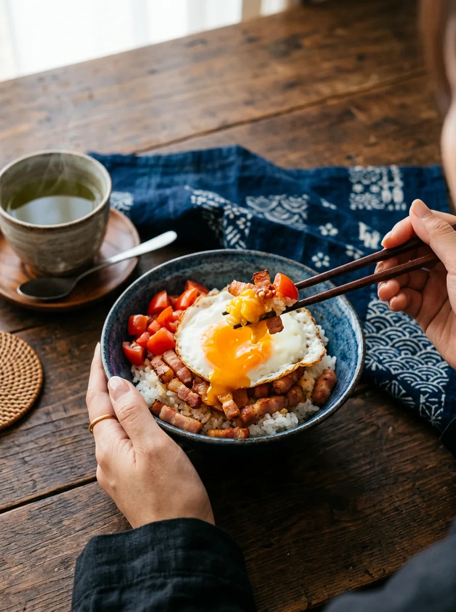

日之出の定食屋「まンまや おちょkitchen」。
毎日食べたくなる、手作りの定食をお出ししています。
おなかも心も、まんまる満たす定食。
日替わり定食
まンまや おちょkitchen日之出・定食屋
今日のお昼は、
まンまやで。
日之出で、手作りの定食をお出ししているお店です。
おなかも心も満たされる、家庭の味を大切にしています。
4.5Googleの口コミ 65件
おすすめMenu
- 1

日替わり定食
主菜と小鉢、ご飯とお味噌汁
- 2

人気のおかず
おちょkitchenの定番の一品
- 3

手作りの小鉢
季節の野菜で、やさしい味
※ 写真と内容はイメージです。実際のお品書きに差し替えます。
こんな日にScene
- 1
お昼ごはんに
毎日寄りたくなる定食を
- 2
ひとりでも
気軽に入れるあたたかいお店
- 3
野菜をとりたい日に
小鉢たっぷりの定食で

お店のことAbout
日之出で、手作りの定食をお出ししているお店です。
おなかも心も満たされる、家庭の味を大切にしています。
アクセス
- 住所
- 〒910-0859 福井県福井市日之出２丁目７−１６ まンまやおちょＫｉｔｃｈｅｎ
- 電話
- 0776-21-8181
- 営業時間
- 〔要確認〕
- 定休日
- 〔要確認〕
今日のお昼は、
まンまやで。